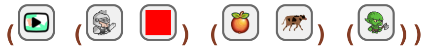
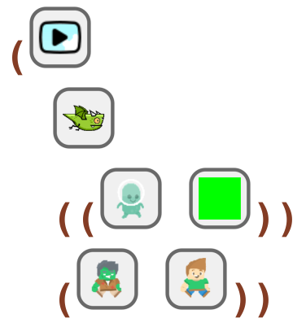
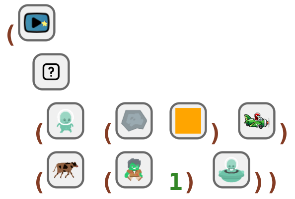
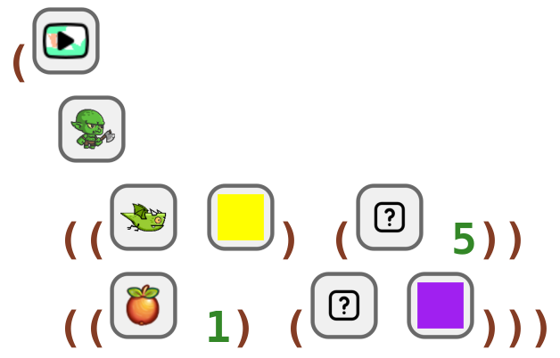
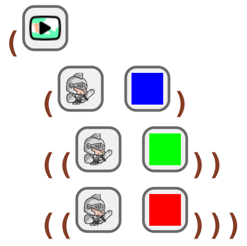

5 More Avoid Katas
5.1 Clicker Avoid 006 Kata
read
Code a fantasy game where the cursor is a red knight collecting fruits and cows, and is avoiding goblins.
code
#lang clicker-cartoon-avoid (start-fantasy (knight red) (fruit cow) (goblin))
In Ratchet:

5.2 Clicker Avoid 007 Kata
read
Code a clouds game where the cursor is a dragon collecting green aliens, and is avoiding zombies and humans.
code
#lang clicker-cartoon-avoid (start-clouds dragon ((alien green)) (zombie human))
In Ratchet:

5.3 Clicker Avoid 008 Kata
read
Code a space game where the cursor is a [choose-your-own-sprite] collecting aliens, orange meteors, and pilots, and is avoiding cows, speed 1 zombies, and ufos.
code
#lang clicker-cartoon-avoid (start-space rand (alien (meteor orange) pilot) (cow (zombie 1) ufo))
In Ratchet:

5.4 Clicker Avoid 009 Kata
read
Code a fantasy game where the cursor is a goblin collecting yellow dragons and speed 5 [choose-your-own-sprite], and is avoiding speed 1 fruits and purple [choose-your-own-sprite].
code
#lang clicker-cartoon-avoid (start-fantasy goblin ((dragon yellow) (rand 5)) ((fruit 1) (rand purple)))
In Ratchet:

5.5 Clicker Avoid 010 Kata
read
Code a fantasy game where the cursor is a blue knight collecting green knights, and is avoiding red knights.
code
#lang clicker-cartoon-avoid (start-fantasy (knight blue) ((knight green)) ((knight red)))
In Ratchet:
